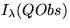

|
Donada una posició qualsevol de l'observador Obs dins l'escena, el color d'un punt Q visible des de Obs, ve determinat pel color de la llum que arriba a Obs i es transmet a través del segment QObs (veure la figura). Com s'ha analitzat en el capítol de color, aquest color queda determinat pel diagrama espectral de la llum. La notació  indica la intensitat (energia) per cadascuna de les diferents ones que integren el diagrama espectral de la llum que arriba a Obs en la direcció QObs.
|
Els factors que intervenen en el còmput d'aquest color queden reflectits a l'esquema de la figura anterior i són essencialment: